Short_Final과 최적화 항로를 내부 교차·상호 교차로 구분해 측정했습니다. Approach·Departure 파일만 읽으며 중복 combined 파일과 점 SHP는 다시 포함하지 않았습니다.
|ZA−ZB|는 같은 XY 위치에서 각 원본 선분의 Z를 따로 보간한 값입니다. 교점 기하의 혼합 Z를 사용하지 않습니다. 입력의 Z 수직 기준·단위가 같다고 가정하며 Z 기준은 변환하지 않습니다. 두 선의 끝점이 같은 XY에서 만나는 위치는 따로 표시합니다. 이것이 의도된 연결인지는 코드가 단정하지 않습니다. 수치만 측정하며 70m 등의 안전 기준이나 실제 운항 시각을 적용하지 않습니다.
중첩 구간은 선분 경계와 높이 차가 0이 되는 위치를 모두 평가합니다. 따라서 평가 위치 수는 단순한 고유 XY 교점 수와 다를 수 있습니다. 자기교차한 선에 높이가 여러 개 있으면 각 선분의 높이를 보존합니다. XY를 자동 스냅하지 않으며, 허용오차 1e-06m는 끝점 분류·중복 제거에만 사용합니다.
점 SHP의 intersection_points_z는 표시용 중간 높이, intersection_levels_z는 각 선의 실제 높이 점 두 개입니다. CSV와 그림의 ZA·ZB가 실제 비교값이며, 3D 그림은 축별 범위가 달라 실제 종횡비 도면은 아닙니다.
교차한 선 쌍 16개, 교점·중첩 평가 위치 16개. 공유 끝점 8개. 전체 최소 수직 간격 0.000m, 공유 끝점만 제외한 최소 간격 0.251m.
모든 교점 수치 CSV · 공유 끝점 제외 CSV · 공유 끝점 CSV · 선 쌍별 요약
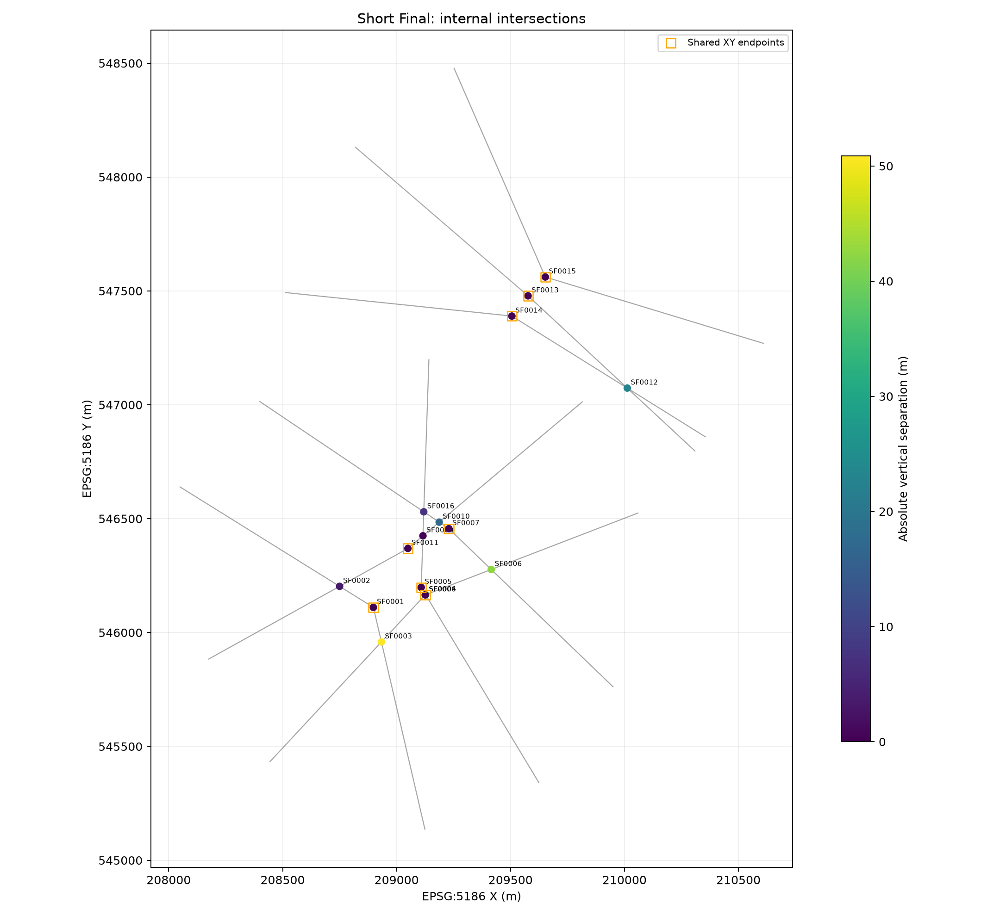
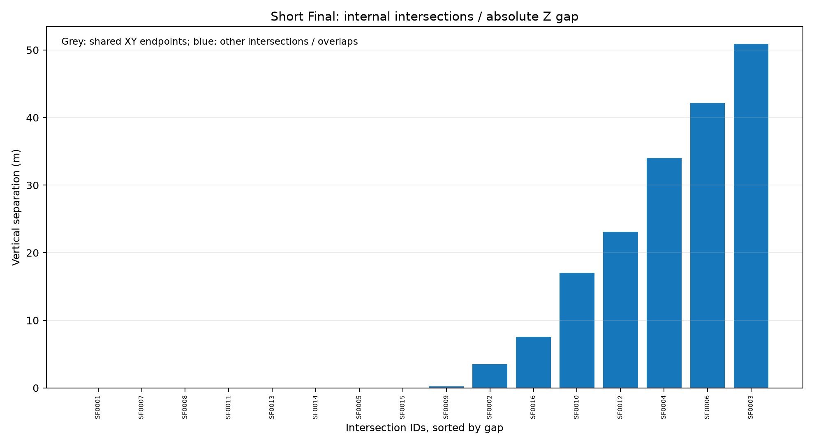
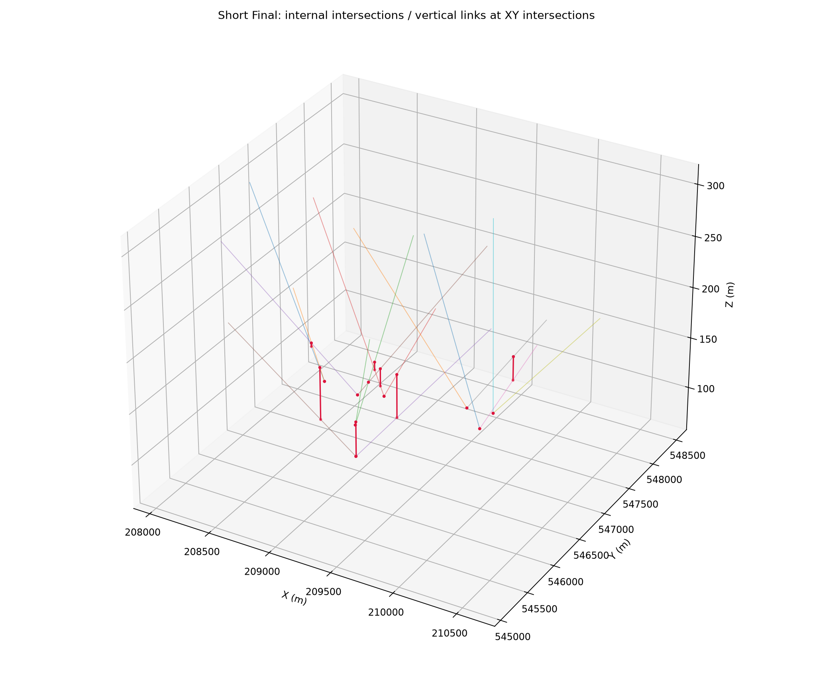
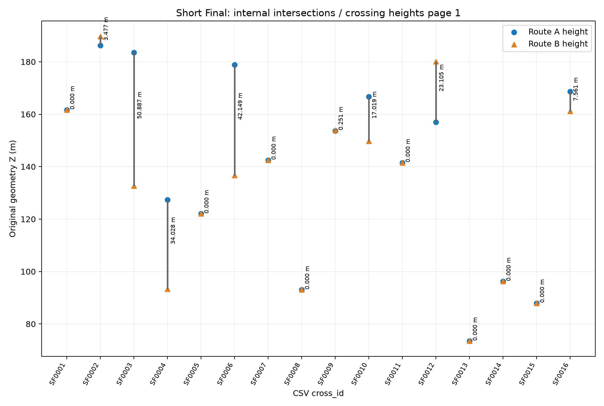
교차한 선 쌍 26개, 교점·중첩 평가 위치 27개. 공유 끝점 0개. 전체 최소 수직 간격 13.516m, 공유 끝점만 제외한 최소 간격 13.516m.
모든 교점 수치 CSV · 공유 끝점 제외 CSV · 공유 끝점 CSV · 선 쌍별 요약
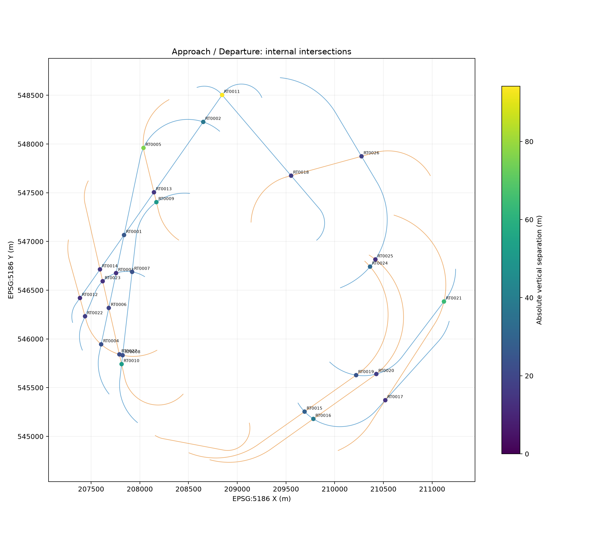
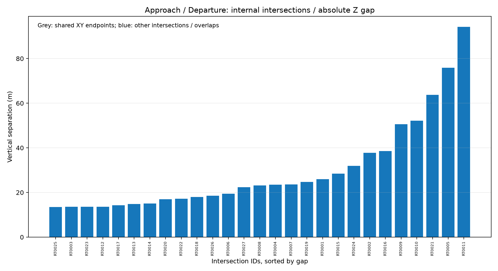
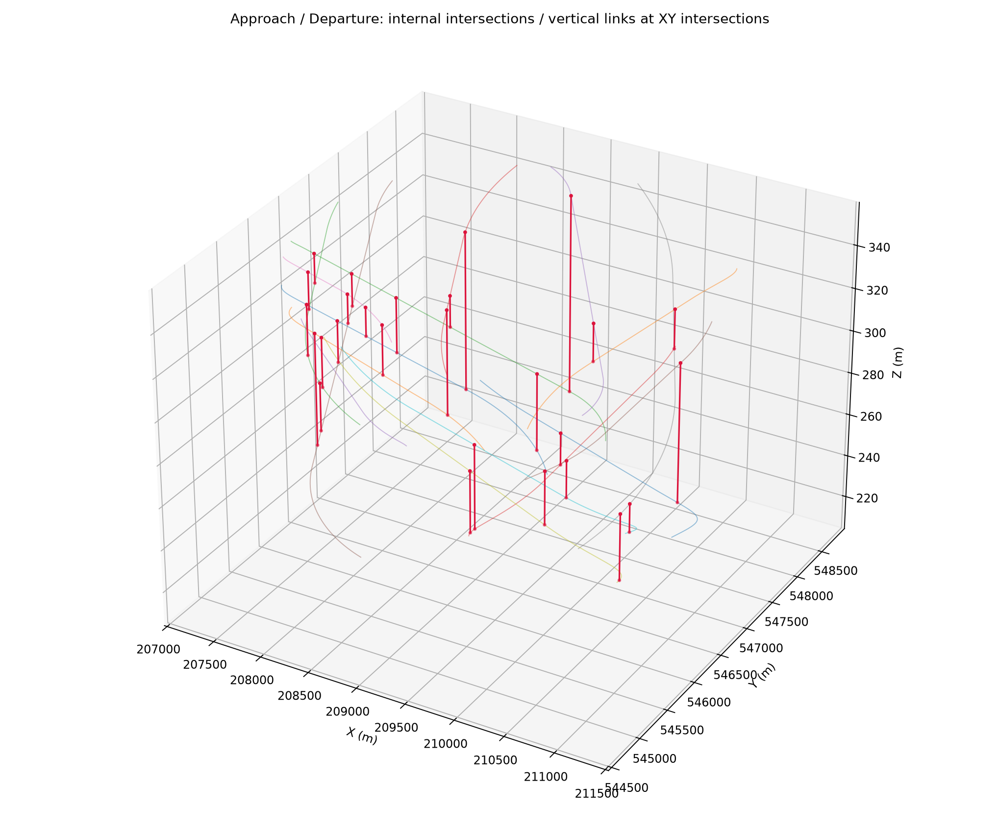
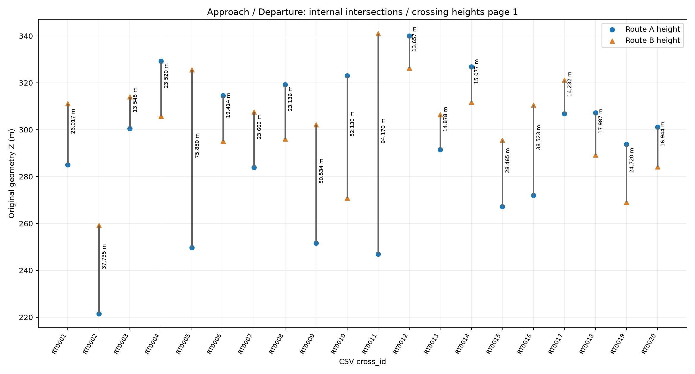
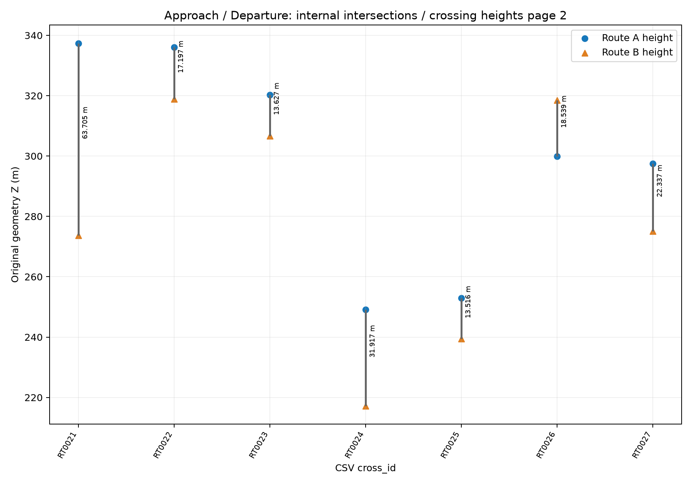
교차한 선 쌍 22개, 교점·중첩 평가 위치 22개. 공유 끝점 16개. 전체 최소 수직 간격 0.000m, 공유 끝점만 제외한 최소 간격 55.710m.
모든 교점 수치 CSV · 공유 끝점 제외 CSV · 공유 끝점 CSV · 선 쌍별 요약
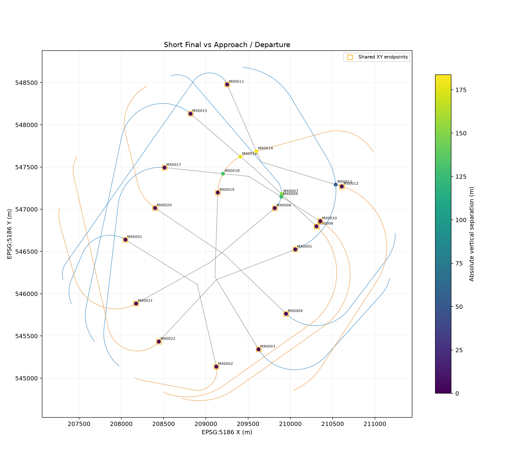
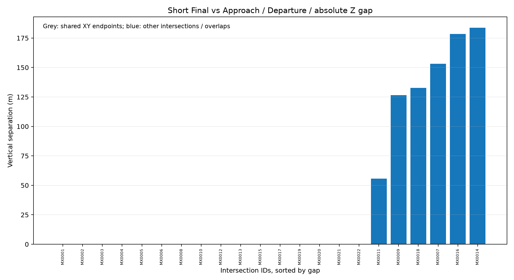
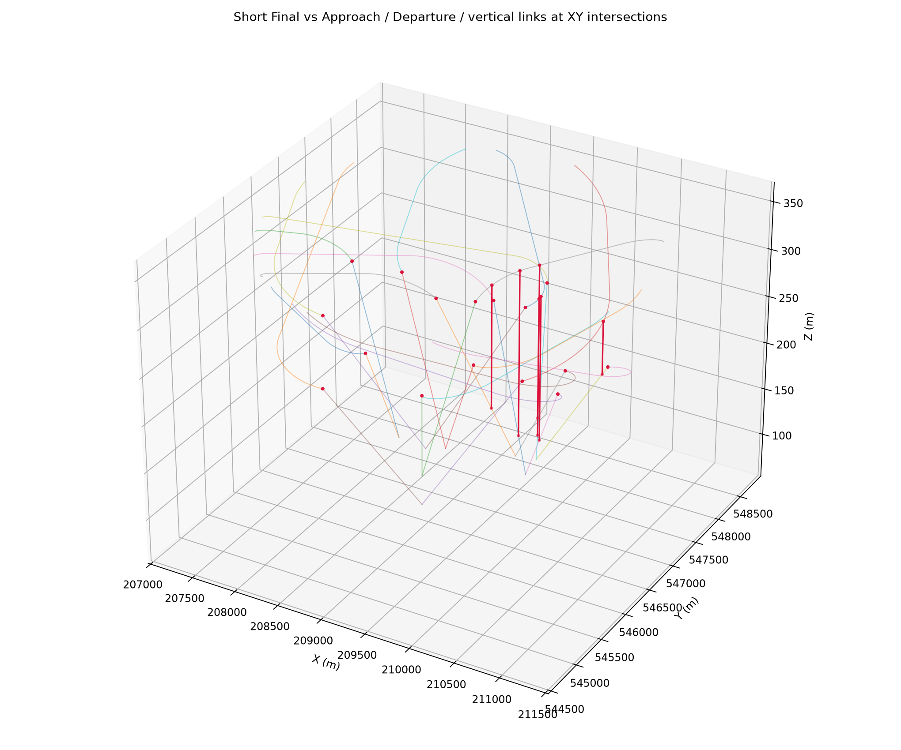
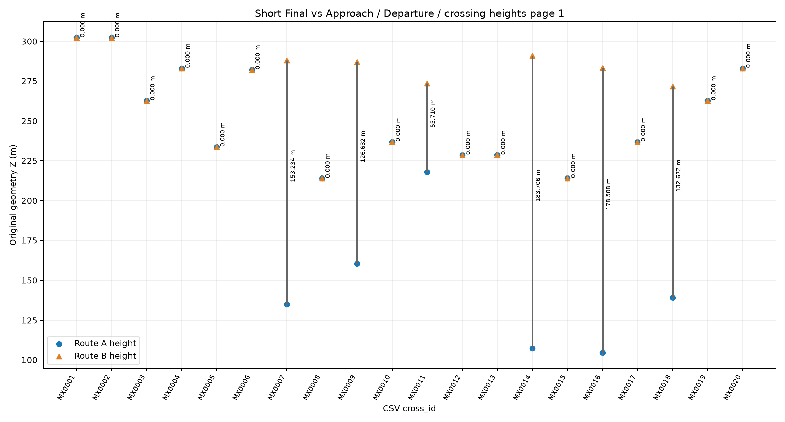
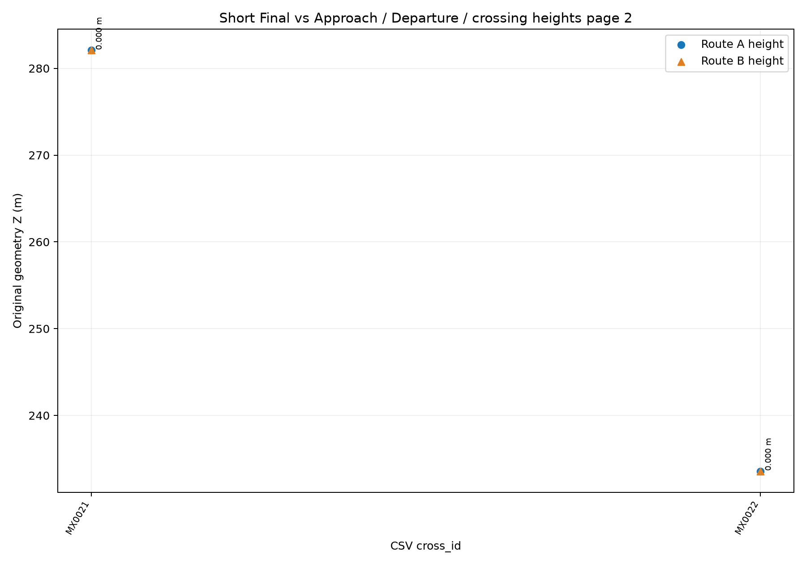
python -B 수정본_20261103/코드/Vertical_Separation_gauge.py python -B 수정본_20261103/코드/Vertical_Separation_gauge.py --self-check